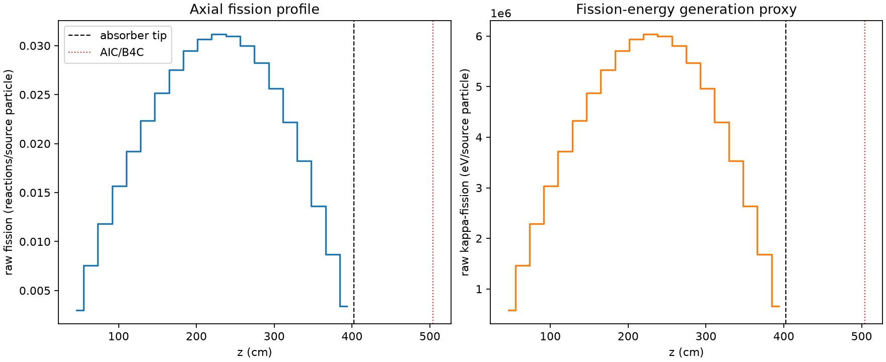
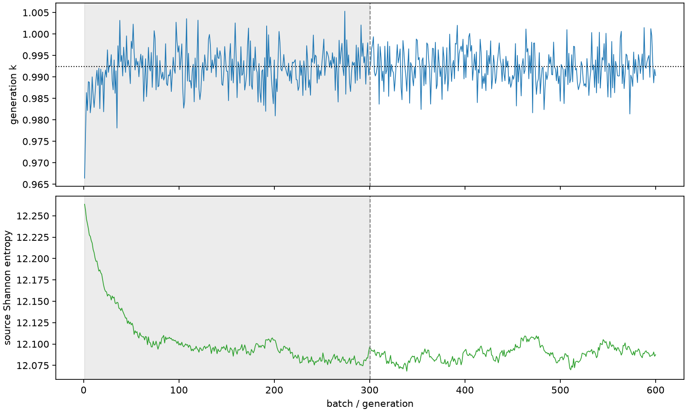

| field | value |
|---|---|
| experiment | V2-ADVISOR_PILOT8-0002 |
| k | 0.9924648455456077 |
| MC standard error | 0.00016761521491611558 |
| seconds | 1170.694311447005 |
| acceptance | not_assessed |
| convergence | review_required |
Completed is output integrity only; physical and statistical review required. Zero tallies do not prove zero production or zero uncertainty.
| diagnostic | value |
|---|---|
| geometric fuel voxels | 5280 |
| zero fission tally voxels | 0 |
| low signal fuel voxels | 0 |
| low signal fission share | 0.0 |
| low signal kappa share | 0.0 |
| important fission share | 0.9500029481179479 |
| previous filter included | 5280 |
| duration estimate s | 1562.5173488400023 |
| actual minus estimate s | -391.8230373929973 |
| fission relative MC error | statistics |
|---|---|
| all_geometric_fuel | {"voxels": 5280, "positive_mean_voxels": 5280, "zero_mean_voxels": 0, "undefined_relative_error_voxels": 0, "median": 0.009931535063368142, "p95": 0.02559899964387644, "maximum": 0.033115546405922534} |
| low_signal | {"voxels": 0, "positive_mean_voxels": 0, "zero_mean_voxels": 0, "undefined_relative_error_voxels": 0, "median": null, "p95": null, "maximum": null} |
| important_95pct | {"voxels": 4295, "positive_mean_voxels": 4295, "zero_mean_voxels": 0, "undefined_relative_error_voxels": 0, "median": 0.009299149320805548, "p95": 0.013797708012419049, "maximum": 0.017679840730460975} |
| outside_previous_filter | {"voxels": 0, "positive_mean_voxels": 0, "zero_mean_voxels": 0, "undefined_relative_error_voxels": 0, "median": null, "p95": null, "maximum": null} |
| kappa_fission relative MC error | statistics |
|---|---|
| all_geometric_fuel | {"voxels": 5280, "positive_mean_voxels": 5280, "zero_mean_voxels": 0, "undefined_relative_error_voxels": 0, "median": 0.009919202870582424, "p95": 0.02556416599306673, "maximum": 0.033064297596787896} |
| low_signal | {"voxels": 0, "positive_mean_voxels": 0, "zero_mean_voxels": 0, "undefined_relative_error_voxels": 0, "median": null, "p95": null, "maximum": null} |
| important_95pct | {"voxels": 4295, "positive_mean_voxels": 4295, "zero_mean_voxels": 0, "undefined_relative_error_voxels": 0, "median": 0.009286870499505252, "p95": 0.01378044066625529, "maximum": 0.017657371859384364} |
| outside_previous_filter | {"voxels": 0, "positive_mean_voxels": 0, "zero_mean_voxels": 0, "undefined_relative_error_voxels": 0, "median": null, "p95": null, "maximum": null} |
| axial bin | fission share | kappa-fission share |
|---|---|---|
| 1 | 0.00740455228032253 | 0.007404959571276419 |
| 2 | 0.018698880077710013 | 0.01869883642571422 |
| 3 | 0.029173734825998388 | 0.02917365990724367 |
| 4 | 0.03875456190740242 | 0.03875462600783161 |
| 5 | 0.04743635999805495 | 0.0474363266272374 |
| 6 | 0.05528590417242817 | 0.05528569236145981 |
| 7 | 0.062168890637442555 | 0.06216883354383962 |
| 8 | 0.06806902424054921 | 0.0680688383610318 |
| 9 | 0.072876463065926 | 0.07287630572570322 |
| 10 | 0.07584454129469362 | 0.07584439624220489 |
| 11 | 0.07701065308599968 | 0.07701063440294408 |
| 12 | 0.07651740599710406 | 0.07651731681085674 |
| 13 | 0.07409724483785197 | 0.07409721676067639 |
| 14 | 0.06985503898942322 | 0.06985511217861246 |
| 15 | 0.063363200372343 | 0.06336316310611625 |
| 16 | 0.054863600876346424 | 0.05486370099978841 |
| 17 | 0.04502151830774896 | 0.04502157440157268 |
| 18 | 0.03369516527123688 | 0.03369509461637743 |
| 19 | 0.02150494074906023 | 0.02150489074972837 |
| 20 | 0.008358319012357776 | 0.008358821199784733 |
Histories include the inactive-to-active transition at batch 300. kappa-fission approximates fission energy production, not total heat deposition.

